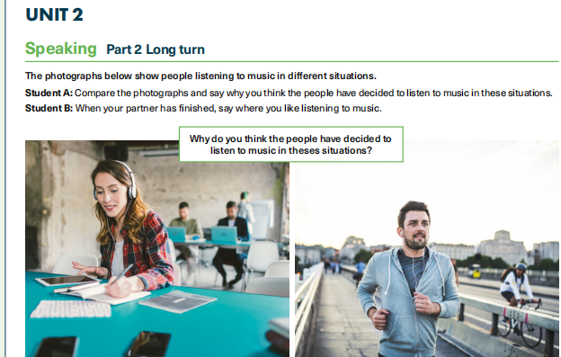

Speaking Part 2 · Long turn
← Unit 2 Speaking
Music in different situations
The photographs below show people listening to music in different situations.

Your turn
- Look at the photographs, which show people listening to music in different situations.
- Student A: Compare the photographs and say why you think the people have decided to listen to music in these situations.
- Student B: When your partner has finished, say where you like listening to music.
Don’t forget!
Student A
Do not describe the photographs in detail; talk about the similarities and differences. The second part of the task is written as a question above the photographs.
Student B
Develop your answer fully, giving reasons for your feelings or opinions.